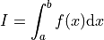
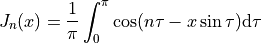
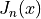

Numerical Integration¶
This chapter describes routines for performing numerical integration (quadrature) of a function in one dimension. GSL Shell re-implements the the algorithms used in QUADPACK, a numerical integration package written by Piessens, Doncker-Kapenga, Uberhuber and Kahaner. FORTRAN code for QUADPACK is available on Netlib.
Currently only two integration methods are available in GSL Shell. Both of them are based on Gauss-Kronrod integration rules. The first method is non-adaptive and is called QNG while the seconde one, QAG, is adaptive. The adaptive method QAG is suitable as a general-purpose integrator, whereas the QNG method should be used only in particular cases where the function has a simple known smooth behavior.
Introduction¶
Each algorithm computes an approximation to a definite integral of the form,

The user provides absolute and relative error bounds (epsabs, epsrel) which specify the following accuracy requirement,
where Result is the numerical approximation obtained by the algorithm. The algorithm attempts to estimate the absolute error AbsErr = | Result - I | in such a way that the following inequality holds,
In short, the routines return the first approximation which has an absolute error smaller than epsabs or a relative error smaller than epsrel.
Note that this is an either-or constraint, not simultaneous. To compute to a specified absolute error, set epsrel to zero. To compute to a specified relative error, set epsabs to zero. The routines will fail to converge if the error bounds are too stringent, but always return the best approximation obtained up to that stage.
Functions¶
- num.integ(f, a, b, epsabs, epsrel)¶
Compute the definite integral of the function
fin the interval specified byaandbwithin the requested precision given byepsabsandepsrel. This function always use the adaptive QAG algorithm internally.
- num.quad_prepare(spec)¶
Returns a function that can perform a numeric integration based on the options
spec. The argumentspecis used to choose the quadrature algorithm, the order and the limits for the adaptive search if applicable. The fields ofspecthat you should give are:- method
The quadrature algorithm. Available algorithms are
qngandqag, the default isqag.- order
The order of the integration rule. The default value is 21.
- limits
The maximum number of subdivisions for adaptive algorithms. The default value is 64.
Usage Example¶
Here a simple example that shows how to plot the Bessel function using its integral definition:

The function num.quad_prepare() is used to prepare the quadrature function.
The function returned is then called many times to obtain :
use 'math'
epsabs, epsrel = 1e-6, 0.01
function bessel_gen(n, q)
local xs
local fint = function(t) return cos(n*t - xs*sin(t)) end
return function(x)
xs = x
return q(fint, 0, pi, epsabs, epsrel) / pi
end
end
-- we get the 'qag' integration rule with default options
q = num.quad_prepare {method= 'qag'}
J7 = bessel_gen(7, q)
graph.fxplot(J7, 0, 50)